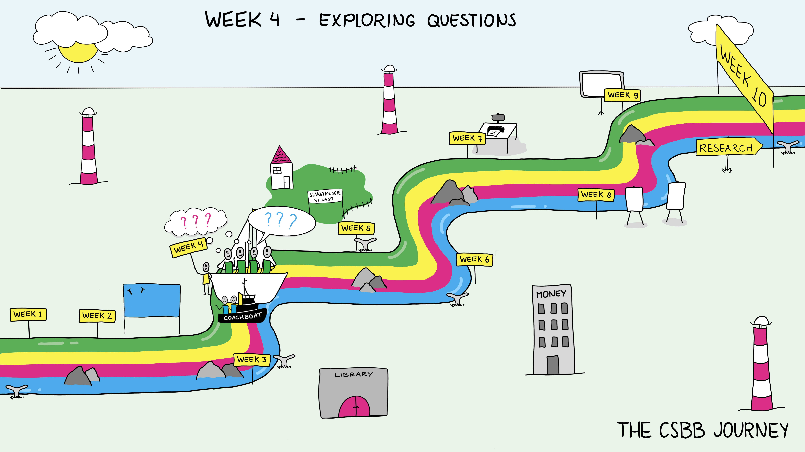

Week 4: Exploring Questions#
Science Spotlight
Lecture: Reflection – What do we know?
Workshop: Interviewing – Asking and Listening
Group activity: Research Question
Friday Symposium
Introduction and goals#
Doing science (and really any knowledge based work) requires taking time to stop and think about what you’re doing. What do you not know about the topic in front of you? Is what you’re doing working, are there ways to improve it? This can be called critical thinking or reflection. It takes practice to develop the habit, and awareness of your biases.
Another key piece is learning to ask others questions and effectively listen to the answers. This includes checking your assumptions about what they mean by the answer. These are powerful tools in being an excellent researcher.
This week we’ll focus on these two sides of exploring questions while you get further in developing you and your group develop your research question.
Lecture: Reflection - What do we know?#
Overview#
This lecture will teach students the importance of reflection and how to properly use it to improve their own research and thinking. Reflection is a vital component of critical and independent thinking and an important part of the scientific process. To better understand reflection, you will learn some of the philosophical backgrounds behind this technique, which was first described as the observation of internal operations of the mind.
The main focus, however, should be on teaching techniques for reflection and how to turn them into habits that will accompany them through any future research and scientific endeavour they are part of. They should also be sensitised to the presence of internal biases and assumptions, which have the ability to skew and influence any research. For such, common biases such as the confirmation bias, anchoring bias, availability heuristic, status quo bias or the misinformation effect (this list is not exhaustive) and how they can come back in research will
Key concepts#
Reflection – what is it and why do we want it?
How to deal with what we know and what we do not
Components of reflection: perceiving, doubting, thinking, believing, knowing, assuming, reasoning, questioning, …
Characteristics of a good reflective process
Different biases, how to recognise your own biases and how to avoid them
When to make assumptions? Which assumptions are better not to make?
Workshop: Interviewing - Asking and Listening#
Overview#
Interviewing is a useful method for gathering information on a research topic. A well-prepared conversation with stakeholders can provide valuable insights into a study’s societal relevance, approach, or contributions. This workshop aims to prepare students for effectively conducting an interview. First, effective preparation of the interview is addressed. The key focus is on formulating clear, open questions that invite interviewees to give informative answers, as well as prioritizing questions, keeping track of time, and making agreements on how the information is used for research purposes. Second, students practice interviewing in-class activities such as role plays; in challenging situations, they practice effective listening, adapting and responding to interviewees’ answers while keeping an eye on the aim of the interview.
Key concepts#
Formulate clear and open questions (e.g., with the technique of non-directive questioning)
Reflective listening (based on the LISTEN approach)
How to adapt to the context of the interview
Relevant learning goals#
Students are able to:
Prepare an interview (e.g., keep track of time, prioritize questions, stay in control without being inflexible)
Formulate effective questions during an interview
Understand in practice how to listen effectively and reflectively
Deal with challenging situations during an interview
Group activity: starting your proposal#
By week 4, groups should have a solid specific research question with preliminary ideas of how they might address it in a research project. This is called the hypothesis and will be part of your grant application. Refer back to examples of proposals to see how it should be written.
Discussion Questions#
What do you think about reflection and learning in a research context?
Do you have instances in your life where reflection has helped you resolve a problem or learn from an experience?
What advice for asking questions do you find most valuable and why?
What advice for asking do you find most valuable and why?
Listening–what does it mean? What does it mean to feel heard? What does it mean to hear those around you?
How do you feel about not knowing things?
Do you have tools you use to help you identify what you don’t know you don’t know?
Weekly Submitted Assignments:#
Group#
What question are you focusing on for your proposal? (½ page)
Individual#
What is challenging you in this minor? How are you adressing it? (½ page)
This will be useful to discuss next week in your one-on-one session with your supervisor to see what feedback they can give you.
References#
McGrath, C., Palmgren. P.J., & Liljedahl, M. (2019). Twelve tips for conducting qualitative research interviews. Medical Teacher, 41(9), 1002-1006, DOI: 10.1080/0142159X.2018.1497149.
Ribbs, G.R. (2013). How to do a research interview